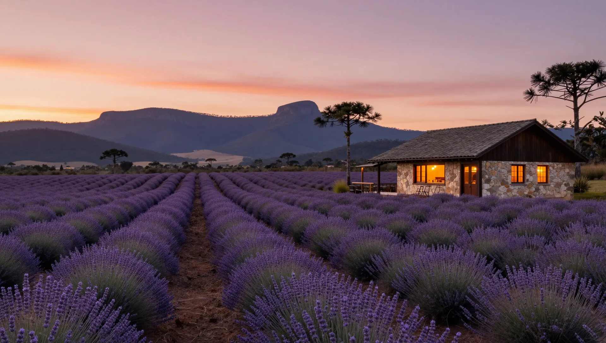
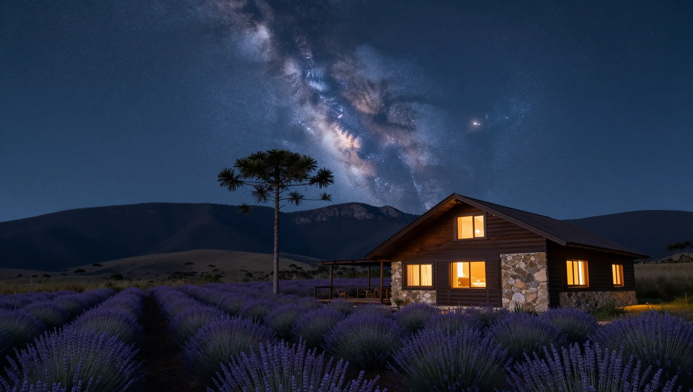

Serra da Mantiqueira, Brasil · 1.600 m
Donde la sierradetiene el tiempo.
Seis suites entre campos de lavanda, con chimenea, bañera y desayuno en la galería. A dos horas y media de São Paulo, lejos de todo apuro.
La sierra, hora por hora
Respuesta rápida
¿Qué es Alto Lume?
Un refugio pequeño en la Serra da Mantiqueira, en Brasil: seis suites repartidas en 40 hectáreas de lavanda, pensadas para descansar sin apuro.
La casa principal tiene la sala con chimenea, la cocina y la galería del desayuno. Las suites están separadas entre sí, cada una con su vista: el valle con niebla, el campo de lavanda o la sierra entera desde lo alto del cerro.
Es una posada familiar, con equipo de la región, comida hecha acá y reglas escritas antes de pagar. Por WhatsApp atendemos en español.
| Tarifa | R$ 890 a R$ 1.490 por noche, para dos |
|---|---|
| Desayuno | Incluido, de 8 a 11 h |
| Entrada y salida | Desde las 14 h · hasta las 12 h |
| Estadía mínima | Dos noches si incluye sábado o feriado |
| Distancia | 2 h 30 en auto desde São Paulo |
| Altitud | 1.600 m · 14 °C de media en invierno |
| Perros | En la Casa del Mirador |
| Niños | Desde los 7 años |
| Pago | Seña del 30% por Pix · saldo al llegar |
Suites
Tres maneras de quedarse.
Todas con desayuno, sábanas de algodón egipcio y vista a la sierra. Ninguna tiene televisor, y nadie lo extraña.
 Para dos
Para dosSuite Niebla
- 32 m²
- chimenea
- vista al valle
R$ 890 la noche, con desayuno
Ver la suite Para dos
Para dosSuite Lavanda
- 44 m²
- bañera
- deck en el campo
R$ 1.090 la noche, con desayuno
Ver la suite Hasta cuatro
Hasta cuatroCasa del Mirador
- 78 m²
- dos dormitorios
- cocina
R$ 1.490 la noche, con desayuno
Ver la suiteExperiencias
El día pasa despacio.
- 01Incluido
Desayuno en la galería
Pan de masa madre, quesos de la sierra y miel de nuestras colmenas, hasta las 11 h.
- 02Dic a feb
Cosecha de lavanda
Una mañana en el campo con quienes lo cuidan. Te llevás tu propio ramo seco.
- 03Sáb y dom
Sendero del Mirador
Una caminata suave de dos horas hasta el punto más alto de la propiedad, con guía local.
- 04Noches despejadas
Cielo estrellado
Deck climatizado, mantas, vino y un telescopio. Lejos de la ciudad, la Vía Láctea aparece entera.
- 05Con reserva
Cena de cuatro pasos
Trucha, verduras de la huerta y postre con lavanda, a la luz de las velas, de jueves a sábado.


Cómo reservar
Tres pasos, sin registro.
Elegí las fechas
El simulador muestra el precio en el momento, con desayuno, y avisa si la fecha pide dos noches.
Mandá el pedido
El botón abre el WhatsApp de la posada con el mensaje listo: suite, fechas, personas y precio.
Confirmá con la seña
Respondemos en hasta dos horas con la confirmación y la clave Pix. Con la seña del 30%, las fechas son tuyas.
Reserva
Elegí las fechas.
Del resto nos ocupamos nosotros.
Explorá los precios ilustrativos y la vista previa del mensaje.
- Entrada desde las 14 h, salida hasta las 12 h
- Mínimo de dos noches si la estadía incluye sábado, feriado o víspera de feriado
- Seña del 30% por Pix para asegurar las fechas; el saldo, al llegar
- Cancelación sin costo hasta 15 días antes de la llegada
Preguntas
Lo que todos preguntan.
¿Cuánto cuesta la noche?+
De R$ 890 a R$ 1.490 por noche según la suite, con desayuno incluido. El precio es el mismo todo el año; si la estadía incluye sábado o feriado, el mínimo es de dos noches.
¿Cómo reservo?+
Elegí fechas y suite en el simulador y mandá el pedido por WhatsApp. Respondemos en hasta dos horas, de 8 a 20 h, con la confirmación y la clave Pix para la seña del 30%.
No tengo Pix. ¿Cómo pago la seña?+
Avisanos por WhatsApp y te mandamos un link de pago con tarjeta. El saldo se puede pagar con tarjeta de crédito al llegar.
¿Cómo llego?+
En auto, a 2 h 30 de São Paulo, con asfalto hasta la tranquera. Sin auto, en ómnibus hasta el pueblo cercano; te buscamos por R$ 90 cada tramo.
¿Puedo llevar a mi perro?+
Sí, en la Casa del Mirador, que tiene patio cercado: hasta dos perros, con vacunas al día y una tasa de R$ 80 por estadía.
¿Hace mucho frío?+
De junio a agosto las noches bajan a 2–8 °C y es común la helada. Todas las suites tienen calefacción y acolchado de plumas. En verano, las tardes son frescas y llueve al final del día.
Este sitio también está en portugués e inglés. Las páginas internas están en portugués.

Cómo llegar
Reserve su
silencio.
Última parada: el portón de madera, a la derecha.
@perfil-demonstrativo